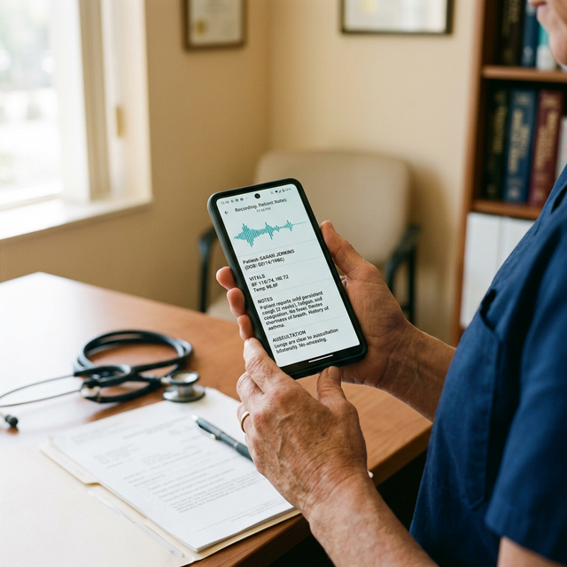

Care without the paperwork.
ChartLite is a voice-powered, vision-capable documentation tool built for primary care. It operates 100% offline on Gemma 4 and is completely free, translating spoken consultations and photographed clinical artifacts into structured clinical records.
"A clinic's most valuable resource is the clinician's time. ChartLite restores that time by completely removing the friction of data entry."
As natural as a conversation.
We believe technology should adapt to how you practice medicine, not force you to change your workflow. By utilizing advanced on-device speech recognition, ChartLite listens to the natural dialogue between you and your patient.
There are no complex menus to navigate or checkboxes to fill out. You speak. The application understands.
-
01
Speak Your Assessment
Discuss symptoms and treatment with your patient normally while the device records.
-
02
Instant Structure
The system automatically extracts the diagnosis, vital signs, and prescribed medications.
-
03
Review and Save
A formatted clinical note is generated for your brief review and immediate approval.

100% Offline. Scales as you grow.
Many systems require expensive servers and uninterrupted broadband. We designed ChartLite to function flawlessly even when those aren't guaranteed.
It operates entirely offline on standard Android devices, with battery-aware inference that queues transcripts and processes them in efficient batches. When reliable internet or advanced devices are available, ChartLite adds secure peer-to-peer sync — including cross-facility patient sharing — optional cloud AI, and enterprise-grade reporting integrations.
Whether you are operating a rural healthcare outpost or a fast-paced urban practice, the platform adapts to your infrastructure. No matter the setting, your data is protected with bank-standard encryption.
ChartLite is open-source and will always be completely free for clinical use. No subscriptions, no hidden fees.
- 01 Zero ongoing licensing fees.
- 02 Fully functional without internet.
- 03 Unlocks optional cloud AI & reporting when connected.
- 04 Built for both remote clinics & urban practices.
Enterprise-Grade Architecture.
Built on modern, verifiable technologies to ensure reliability, security, and interoperability in the most demanding environments.
On-Device AI Inference
ChartLite executes entirely locally. Gemma 4 handles clinical extraction and multimodal artifact reading — E4B on devices with ≥ 6 GB RAM, E2B on ≥ 4 GB — via Google AI Edge's MediaPipe LiteRT. NVIDIA Parakeet TDT v3 handles English speech recognition (1.69% WER) and Meta Omnilingual ASR covers 1,600 + non-English languages on-device via Sherpa-ONNX. A graceful fallback chain (Gemma 4 → Claude/OpenAI cloud → Regex) ensures extraction always succeeds when connectivity returns. Hardware-aware routing keeps context windows lean and accurate on resource-constrained mid-tier phones. Measured against 11 other models →
Knowledge-Graph Safety Net
Gemma 4 invokes BODHI (Eka Care's clinician-curated knowledge graph — 779 SNOMED conditions, 1,186 drugs, 812 labs, 10,352 symptom→condition edges) as native function calls. Four safety tools (drug-allergy cross-reactivity, drug-drug interactions, drug-condition indication, triage urgency) fire deterministically against the extracted encounter — synthesising bedside decisions the LLM alone misses. Every alert renders with a SNOMED-traceable audit trail.
Zero-Trust Security
Data at rest is protected by a SQLCipher encrypted database. In completely offline settings, vital synchronization is achieved using an AES-256-GCM encrypted binary payload over standard SMS networks. Play Integrity device attestation verifies app authenticity before any cloud API access.
Global Interoperability
Clinical data is stored natively for speed, with FHIR R4 bundles generated on-demand for external systems like DHIS2 and OpenMRS. A built-in billing engine automates ICD-10 to CPT/HCPCS mapping, E/M level coding, and SOAP note generation from structured encounter data. Ready for insurance claims and national health information exchanges across 3 active + 5 planned countries.